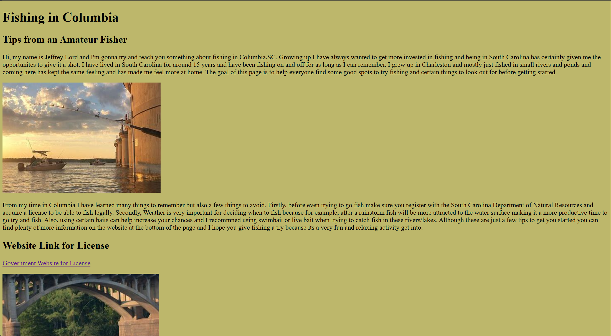

Jeffrey Lord
CSCE 242: Web Applications
Assignment 01 - Basic HTML
This assignment was focused on making a website about a chosen topic and showing the fundamentals of HTML and certin layouts to follow.
Assignment 02 - Basic CSS

This assingment was focused on making a website and using learned CSS styles to help make websites look more stylish.
Assignment 03 - Page Layout

This assingment focused on combining the skills used in the previous two assignments and also using the new flex skill to help render websites based on the certain types of media being used.
Assignment 05 - JavaScript
This assignment involves combining skills used in JavaScript, HTML, and CSS and achieving a singular goal
Assignment 06 - Conditionals
This assingment focused on using javascript conditionals using two different excercises.
Assignment 07 - Loops
This assingment focused on using javascript loops to create an image of a stickperson climbing up a ladder making it look like an animation.
Assignment 08 - Arrays
This assingment focused on using javascript arrays and being able to click on data and get a popup box with more data on the selected element.
Project Part 01 - Topic Selection

This project was focusing on the inital start of the project and choosing what topic it would focus around.
Project Part 02 - Wireframes
This project was focusing on making an outline and a mock draft of what our website would look roughly like
Project Part 03 - HTML and CSS
This project was about making our wireframe into an actual HTML/CSS website
Project Part 04 - Colors, Pictures, and Text

This project was about making our website look more professional and adding new pictures with real text.